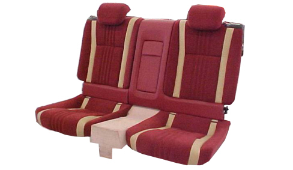
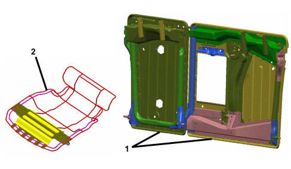

7050 REAR SEATS
- Path
- Descriptions > 70 FITTINGS > 7050 REAR SEATS
- Kind
- system description
- Applies to
- all engines; all production periods
- Interactive page
- https://sloeber94.github.io/elrnDB-aBrrSpdr/en/#/946001249
Applies to: all engines; all production periods
INTRODUCTION
The Alfa Romeo Brera rear seats have been designed in conjunction with the front seats to optimise their qualities of comfort and safety.
The rear seats offer the following features:
- Split two-seater back seats (40% + 40%)
- Vehicle console central cushion (20%)
- Backrest structure with two fold-down parts (60% + 40%)
- Cushion frame for independent seats with joint foam padding
- Adjustable head restraint
- Central armrest
- Provision for ski tunnel with plastic flap
- Isofix attachments

Seat structure

1. Split seat structure
2. Independent cushion frame